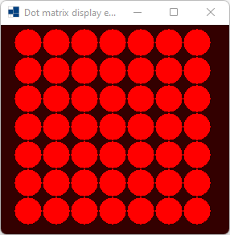
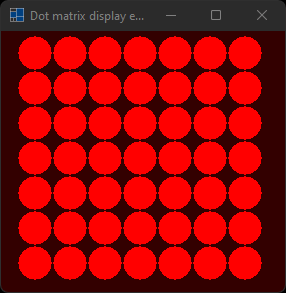
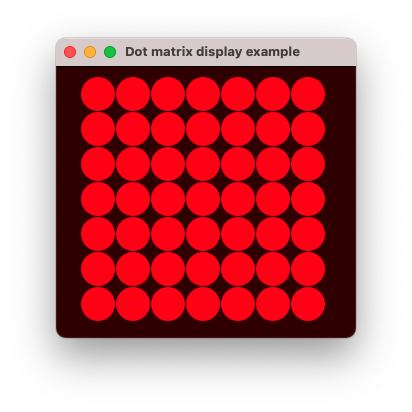
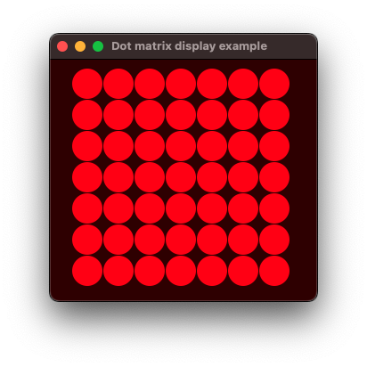
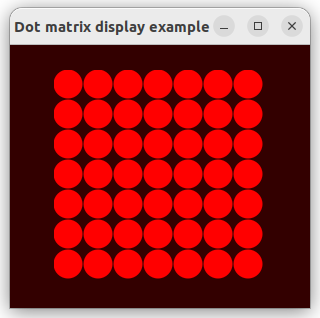
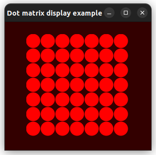

|
xtd
0.2.0
|
Loading...
Searching...
No Matches
dot_matrix_display.cpp
demonstrates how to use xtd::forms::dot_matrix_display control.
- Windows
- 

- macOS
- 

- Gnome
- 

#include <xtd/drawing/color_converter>
#include <xtd/forms/application>
#include <xtd/forms/dot_matrix_display>
#include <xtd/forms/form>
#include <xtd/forms/timer>
using namespace xtd;
using namespace xtd::collections::generic;
using namespace xtd::drawing;
using namespace xtd::forms;
public:
form1() {
dot_matrix_display1.height(250);
dot_matrix_display1.location({(client_size().width - dot_matrix_display1.width()) / 2, (client_size().height - dot_matrix_display1.height()) / 2});
dot_matrix_display1.parent(*this);
dot_matrix_display1.fore_color(color::red);
dot_matrix_display1.anchor(anchor_styles::top | anchor_styles::bottom);
timer1.interval(300_ms);
timer1.enabled(true);
timer1.tick += [&] {
dot_matrix_display1.dot_matrix_style(dot_matrix_styles[(counter / chase.size()) % dot_matrix_styles.size()]);
dot_matrix_display1.set_dots(chase[counter++ % chase.size()]);
};
back_color(color_converter::average(color::black, dot_matrix_display1.fore_color(), 0.20));
text("Dot matrix display example");
resize += [&] {
dot_matrix_display1.left((client_size().width - dot_matrix_display1.width()) / 2);
};
}
private:
int counter = 0;
{},
{{3, 3}},
{{3, 3}, {2, 2}, {2, 3}, {2, 4}, {3, 2}, {3, 4}, {4, 2}, {4, 3}, {4, 4}},
{{3, 3}, {2, 2}, {2, 3}, {2, 4}, {3, 2}, {3, 4}, {4, 2}, {4, 3}, {4, 4}, {1, 1}, {1, 2}, {1, 3}, {1, 4}, {1, 5}, {2, 1}, {2, 5}, {3, 1}, {3, 5}, {4, 1}, {4, 5}, {5, 1}, {5, 2}, {5, 3}, {5, 4}, {5, 5}},
{{3, 3}, {2, 2}, {2, 3}, {2, 4}, {3, 2}, {3, 4}, {4, 2}, {4, 3}, {4, 4}, {1, 1}, {1, 2}, {1, 3}, {1, 4}, {1, 5}, {2, 1}, {2, 5}, {3, 1}, {3, 5}, {4, 1}, {4, 5}, {5, 1}, {5, 2}, {5, 3}, {5, 4}, {5, 5}, {0, 0}, {0, 1}, {0, 2}, {0, 3}, {0, 4}, {0, 5}, {0, 6}, {1, 0}, {1, 6}, {2, 0}, {2, 6}, {3, 0}, {3, 6}, {4, 0}, {4, 6}, {5, 0}, {5, 6}, {6, 0}, {6, 1}, {6, 2}, {6, 3}, {6, 4}, {6, 5}, {6, 6}},
};
dot_matrix_display dot_matrix_display1;
list<dot_matrix_style> dot_matrix_styles = {
};
timer timer1;
};
auto main() -> int {
application::run(form1 {});
}
Represents a strongly typed list of objects that can be accessed by index. Provides methods to search...
Definition list.hpp:79
static xtd::drawing::color average(const xtd::drawing::color &color1, const xtd::drawing::color &color2, double weight) noexcept
Returns the weighted average color between the two given colors.
static const xtd::drawing::color red
Gets a system-defined color that has an ARGB value of 0xFFFF0000. This field is constant.
Definition color.hpp:401
static const xtd::drawing::color black
Gets a system-defined color that has an ARGB value of 0xFF000000. This field is constant.
Definition color.hpp:80
static void run()
Begins running a standard application message loop on the current thread, without a form.
Represents a dot matrix display class.
Definition dot_matrix_display.hpp:32
Represents a window or dialog box that makes up an application's user interface.
Definition form.hpp:54
Implements a timer that raises an event at user-defined intervals. This timer is optimized for use in...
Definition timer.hpp:38
@ height
Specifies that the height of the control is defined.
Definition bounds_specified.hpp:34
@ width
Specifies that the width of the control is defined.
Definition bounds_specified.hpp:32
@ bottom
Bind control edges to the bottom of its container.
Definition anchor_styles.hpp:25
@ top
Bind control edges to the top of its container.
Definition anchor_styles.hpp:23
@ square
Square dot matrix style.
Definition dot_matrix_style.hpp:25
@ standard
Standard (or round) dot matrix style.
Definition dot_matrix_style.hpp:27
The xtd::collections::generic namespace contains interfaces and classes that define generic collectio...
Definition comparer.hpp:16
The xtd::drawing namespace provides access to GDI+ basic graphics functionality. More advanced functi...
Definition actions_system_images.hpp:10
The xtd::forms namespace contains classes for creating Windows-based applications that take full adva...
Definition texts.hpp:219
Contains classes that represent ASCII and Unicode character encodings; abstract base classes for conv...
Definition basic_string_builder.hpp:17
The xtd namespace contains all fundamental classes to access Hardware, Os, System,...
Definition abstract_object.hpp:8
Generated on Thu Jul 10 2025 19:25:27 for xtd by Gammasoft. All rights reserved.